Cubes and Towers
Matsumoto Math OlympiadDecember 5th and 7th, 2017
How to Solve Problems?
- Understand the problem
- Pick a plan or strategy
- Carry out or execute the plan
- Check the answer
Common Strategies
|
|
It is important to show the steps of your work instead of only writing down an answer.
 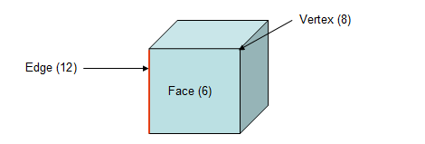
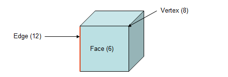
6 square faces, 8 vertices, 12 edges
Let's build blocks using 1-cm cubes
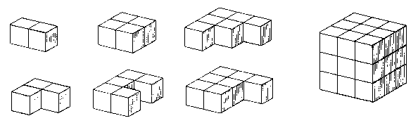
Problem 1
How many 1-cm cubes are needed to build a cube with an edge of 5-cm?Cube with 5-cm Edge
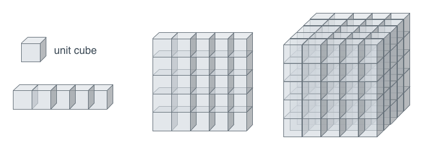- A 5-cm edge 5 cubes
- 1 layer of 5 cube tall: 5x5=25 cubes
- final cube: 5 such layers, 5x25=125 cubes
Problem 2
How many 1-cm cubes are needed to build a rectangular box that is 2 cm high, 3 cm wide and 1cm deep? 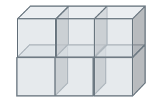# of cubes = Length * Width * Depth = 2x3x1 = 6
Painted Cubes
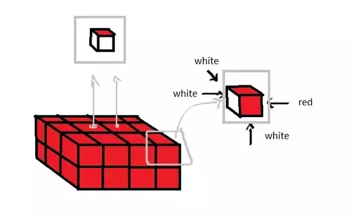When you paint a cube that is bigger than 1x1x1,
do the inside faces get painted?
Here is a 2x2x2 cube. If I paint it red, how many faces have red paint?
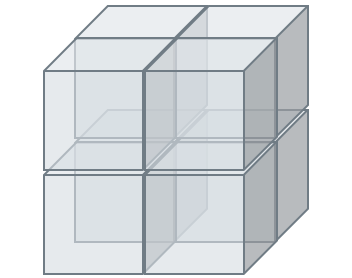3 sides of each cube get paint so 3X8 = 24 faces have paint
# of cubes that have three sides painted in red: 8
| A wooden cube that measures 3 cm along each edge is painted green. The painted cube is then cut into 1-cm cubes | 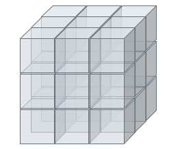 |
- How many of 1-cm cubes do not have greenpaint on any face?
- How many of 1-cm cubes that only have 1 face painted green?
How many of 1-cm cubes do not have red paint on any face?
Only the 1-cm cube in the middle is not colored. Hence the answer is 1.
How many of 1-cm cubes that only have 1 face painted green?
Look at the faces of 3-cm cube. The middle 1-cm cube of each face has just one green face. There are 6 faces of the 3-cm cube. Hence 6 1-cm cubes have green paint on just 1 face.
- Tower problems will have a pattern associated with them that you will need to determine
- In a tower there will always be a cube under one except for the top and bottom layers.
|
|
|
|
A tower is constructed similar to the tower below. However, this tower has a base of 7 cubes. The new one has a base of 21 cubes. How many cubes in total?
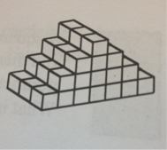A builder is building a staircase similar to the one shown in the picture but he is building it 10 steps high and the base is 3 steps wide. Each building block is one cube. How many cubes does he need?
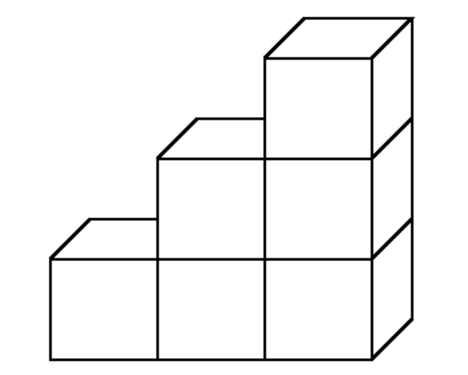| 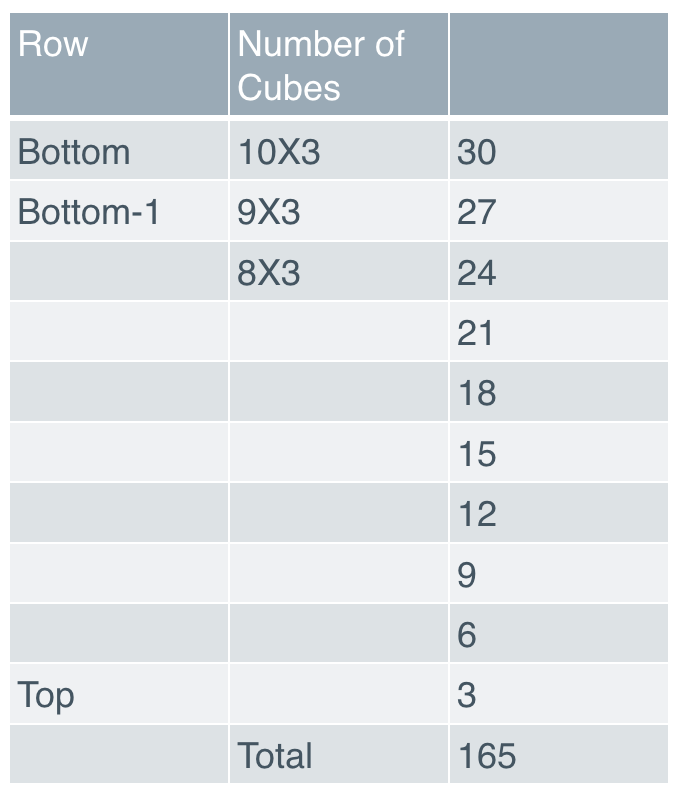 |